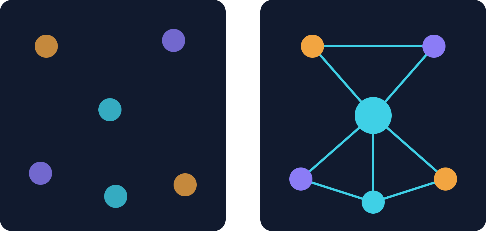
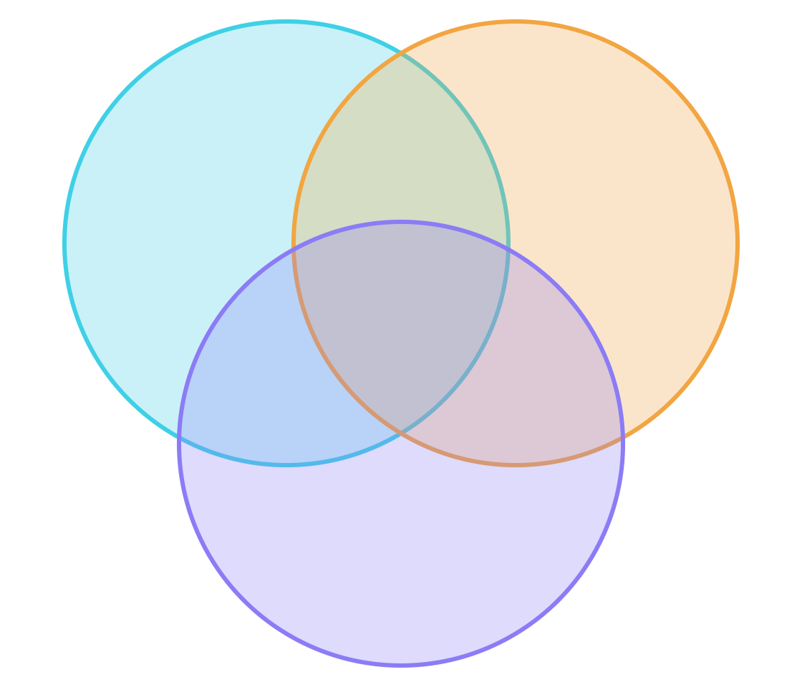

Ecossistemas de Inovação: Teoria, Orquestração e a Prática no PIT SJC
Artigos seminais e recentes da vanguarda da literatura internacional:
- ▸ Shen et al. (2025/2026): Mapeamento cienciométrico e fronteiras
- ▸ Machado et al. (2025): Competências de orquestração
- ▸ Furr & Shipilov (MIT): Ecossistemas adaptativos
- ▸ Majava & Rinkinen: Benchmarking de San Diego
Conexão umbilical com o Parque Tecnológico de São José dos Campos:
- ▸ Primeiro Parque Tecnológico do Estado de SP (2006)
- ▸ Mais de 300 empresas e 4 APLs consolidados
- ▸ Nexus Hub: aceleradora e incubadora de deep techs
- ▸ Campus UNIFESP e sinergia com o PPG-PIT
Interatividade em tempo real pelo smartphone da turma:
- ▸ 6 Fases no mapa do PIT acionadas após cada bloco
- ▸ 18 perguntas (1 certa e 2 erradas) com cronômetro
- ▸ Pontuação regressiva estilo Kahoot por milissegundo
- ▸ Pódio com confetes e análise cienciométrica dos erros
Estrutura e Divisão dos Blocos
James Moore (1993), coevolução e a cienciometria de Shen et al. (2025/2026).
Heterogeneidade de atores, hélices 3ª, 4ª e 5ª, e a simbiose acadêmica-industrial.
Framework de Machado et al. (2025): Apropriabilidade, Mobilização e Estabilidade.
Furr & Shipilov (MIT), o case Nexus Hub e estratégias adaptativas de liderança.
Benchmarking internacional Majava & Rinkinen e a entrevista com o PIT SJC.
O Lado Sombrio (Shen et al.), lock-in predatório e debate estratégico com a banca.
Por que o PIT SJC é Nosso Estudo de Caso?
- ▸ Primeiro Parque Tecnológico formal de SP (2006)
- ▸ Mais de 1,8 milhão de m² de área dedicada
- ▸ Modelo de governança via Organização Social (OS)
- ▸ 4 APLs (Aeroespacial, TIC, Saúde e Defesa)
- ▸ Mais de 300 empresas residentes e associadas
- ▸ Polo global de alta densidade de engenharia
- ▸ Campus Integrado e Laboratórios Multiusuários
- ▸ Sinergia direta com o Mestrado/Doutorado PPG-PIT
- ▸ Formação de mestres com mindset de orquestração
A Origem do Conceito: Tansley (1935) & Moore (1993)
- ▸ Arthur Tansley (1935): Cunhou o termo "ecossistema" na Biologia/Botânica para descrever comunidades de seres vivos interagindo com o meio físico.
- ▸ James F. Moore (HBR, 1993): Importou a metáfora para a Estratégia Empresarial: as empresas não competem isoladas, mas em ecossistemas interconectados.
- ▸ Co-evolução Mútua: Organizações aprendem, adaptam-se e coevoluem capacidades em conjunto em torno de uma proposta de valor central.
- ▸ Cooperação na Base Científica: Universidades (UNIFESP, ITA) e empresas cooperam em pesquisa pré-competitiva.
- ▸ Competição no Mercado Final: Empresas competem vigorosamente por contratos globais de fornecimento.
- ▸ Destino Compartilhado: O fracasso da cadeia fornecedora compromete o ecossistema inteiro.
Evolução Bibliométrica: Shen et al. (2025/2026)
Fase exploratória, metáforas biológicas seminais e definição de limites conceituais preliminares.
Explosão de estudos sobre orquestradores de Big Techs (Apple, Google), APIs e externalidades de rede.
Foco na transição digital, sustentabilidade Net-Zero, orquestração regional e mitigação do lado sombrio.
Como Diferenciar: Cluster, Sistema e Ecossistema
Concentração geográfica de firmas do mesmo setor que buscam ganho de escala produtiva e redução de custos logísticos.
- ▸ Foco Central: Eficiência de custos e aglomeração de cadeia tradicional.
- ▸ Limitação: Não exige interdependência nem co-criação de novidades tecnológicas.
Arcabouço institucional formal do Estado: leis de incentivo, ministérios, agências reguladoras e fomento público.
- ▸ Foco Central: Políticas públicas de C&T, subsídios e infraestrutura básica regional.
- ▸ Limitação: Dinâmica predominantemente macro, institucional e regulatória.
Rede de parceiros, fornecedores e canais de distribuição voltada à monetização e entrega de valor existente.
- ▸ Foco Central: Captura de valor comercial no curto prazo e market share.
- ▸ Limitação: Não prioriza a pesquisa científica de ponta nem coevolução em incerteza.
Comunidade interdependente de atores heterogêneos focada na co-criação de novo conhecimento.
- ▸ Foco Central: Geração conjunta de soluções inéditas que nenhum ator geraria isolado.
- ▸ Diferencial: Orquestração relacional, simbiose e coevolução contínua.
Desafio da Fase 1: Bloco Acadêmico UNIFESP
Perguntas sobre a metáfora biológica, coevolução, cienciometria de Shen et al. e as fronteiras conceituais de ecossistemas.
2. Ande até o desafio da Fase 1
3. Responda o mais rápido possível!
| Pos | Jogador | Turma | Pontos | Acertos |
|---|---|---|---|---|
| Aguardando respostas da turma para a Fase 1... | ||||
Anatomia do Ecossistema: Heterogeneidade & Simbiose de Atores
UNIFESP • ITA • INPE • CEMADEN
Embraer • Avibras • Ericsson • Startups
FAPESP • FINEP • Anjos • Fundos VC
PIT SJC • Nexus Hub • Living Labs
Da Tríplice à Quíntupla Hélice: Sociedade & Sustentabilidade
Pesquisa pura e aplicada, patentes e formação de mentes científicas (UNIFESP, ITA, INPE).
Conversão de tecnologia em produtos comerciais, tração fabril e escala global.
Marco legal de CTI, estabilidade regulatória, compras públicas e fomento (FAPESP/FINEP).
Cidadãos, usuários e co-criação. Validação de demandas nos Living Labs e cidades inteligentes.
Transição energética, neutralidade de carbono, economia circular e impacto regenerativo.
Interdependência & Riscos: Cadeia Linear vs. Rede Viva
- ▸ Comando & Subordinação: Relações hierárquicas e contratuais rígidas.
- ▸ Transação Bilateral: Compra e venda com preços e especificações fixas.
- ▸ Rigidez Operacional: Baixa adaptabilidade quando ocorrem disrupções externas.
Desafio da Fase 2: Praça Central das Hélices
Perguntas sobre a anatomia do ecossistema, o modelo das 5 hélices e os riscos de co-inovação de Ron Adner.
2. Caminhe até a estação ativa no campus
3. Responda antes do tempo esgotar!
| Pos | Jogador | Turma | Pontos | Acertos |
|---|---|---|---|---|
| Aguardando respostas da turma para a Fase 2... | ||||
Como coordenar atores independentes, e quais mecanismos e competências permitem a orquestração do ecossistema?
Coordenar sem autoridade hierárquica

Das 3 às 8 dimensões de orquestração
Dar direção, reunir e manter os atores
Leiloeiro · propõe agenda para uma visão conjunta
Leiloeiro · cria e promove a visão conjunta
Líder · motiva a colaboração com visão de longo prazo
Fazer conhecimento, ação e mensagem circularem
Representante · compartilha e filtra para fora
Juiz · monitora e ajusta padrões de desempenho
Competência de orquestração: CHA em ação


Como coordenar atores independentes?
Desafio da Fase 3: Centro de Governança do PIT
Perguntas sobre mobilização de atores, regimes de apropriabilidade, governança via Organização Social e mitigação de entropia.
2. Ande até o desafio da Fase 2
3. Responda o mais rápido possível!
| Pos | Jogador | Turma | Pontos | Acertos |
|---|---|---|---|---|
| Aguardando respostas da turma para a Fase 3... | ||||
Como Construir Ecossistemas: Furr & Shipilov (MIT)
- ▸ Querer ditar todas as regras e deter 100% da governança desde o dia zero.
- ▸ Afasta parceiros estratégicos que se sentem meros subordinados em vez de co-criadores.
- ▸ Falha catastrófica em prever mudanças tecnológicas dinâmicas.
- ▸ Alinhamento de Proposta de Valor Mínima: Começar com problemas práticos compartilhados.
- ▸ Estrutura Flexível de Entrada e Saída: Baixa fricção para atração de novas startups.
- ▸ Orquestração Baseada em Incentivos: A rede cresce porque todos ganham valor real.
O Nexus como Catalisador: Acelerando Deep Techs
Laboratórios de prototipagem rápida, eletrônica, ensaios mecânicos e acesso compartilhado à infraestrutura UNIFESP.
Programas de conexão corporativa (open innovation), matchmaking com grandes contas e preparação para rodadas Série A.
Banca de executivos seniores do setor aeroespacial e conexões estreitas com o Fundo Vale e Finep Mulher.
Liderança sem Autoridade Hierárquica: O Desafio do Orquestrador
- ▸ Tradicional: Comando e controle, hierarquia vertical, contratos rígidos de subordinação.
- ▸ Orquestração: Influência lateral, negociação de incentivos, transparência informacional radical.
- ▸ Como o Nexus rearticulou fábricas e laboratórios para produzir ventiladores e EPIs emergenciais.
- ▸ Demonstração real de resiliência e adaptação orgânica da rede do PIT SJC.
Desafio da Fase 4: Nexus Hub de Startups
Perguntas sobre ecossistemas adaptativos, a armadilha do controle imperial, suporte a deep techs e liderança lateral.
2. Ande até o desafio da Fase 3
3. Responda o mais rápido possível!
| Pos | Jogador | Turma | Pontos | Acertos |
|---|---|---|---|---|
| Aguardando respostas da turma para a Fase 4... | ||||
O Caso San Diego: Majava & Rinkinen (2021)
San Diego nasceu ancorada em bases navais e aeroespaciais dos EUA, similar à gênese do DCTA e Embraer em SJC.
Universidade da Califórnia em San Diego atuando como motor inesgotável de pesquisa básica e spin-offs.
Cortes orçamentários federais obrigaram a cidade a se reinventar em biotecnologia, software e telecomunicações (Qualcomm).
O Modelo CONNECT: Cultura de 'Give-First'
- ▸ Springboard Program: Startups passam por sabatinas impiedosas com advogados de patentes, investidores e CEOs experientes.
- ▸ Mentoria voluntária de alta densidade sem cobrança de equity predatório.
- ▸ Foco em preparar a startup antes de apresentá-la ao capital institucional.
- ▸ Fortalecer a rede de executivos aposentados do DCTA/Embraer como mentores ativos no Nexus.
- ▸ Criar fundos locais de Seed Capital para reter as deep techs no Vale do Paraíba.
Desafio da Fase 5: Pavilhão Aeroespacial & San Diego
Perguntas sobre a transformação de San Diego, o orquestrador CONNECT, o programa Springboard e o aprendizado para o Brasil.
2. Caminhe até a estação ativa no campus
3. Responda antes do tempo esgotar!
| Pos | Jogador | Turma | Pontos | Acertos |
|---|---|---|---|---|
| Aguardando respostas da turma para a Fase 5... | ||||
O Parque Tecnológico em Números: Impacto Econômico
A Integração UNIFESP & PIT: Co-criação na Prática
Infraestrutura multiusuária do Campus Parque Tecnológico com acesso franqueado a pesquisadores e startups.
Dissertações e teses desenvolvidas sobre desafios concretos dos APLs de São José dos Campos.
Incentivo ativo à geração de spin-offs universitárias ancoradas no Nexus Hub com fomento PIPE-FAPESP.
San Diego vs São José dos Campos: O que Falta para o Salto?
- ▸ Abundância de fundos de Venture Capital especializados em risco.
- ▸ Cultura de desinvestimento (saída via IPOs na NASDAQ e M&A constante).
- ▸ Fortíssima cultura de doação de tempo de ex-alunos e mentoria gratuita.
- ▸ Densidade de engenharia de elite inigualável na América Latina.
- ▸ Dependência primária de subvenção pública (Finep, Fapesp, Embrapii).
- ▸ Oportunidade: Atrair fundos privados e institucionalizar a mentoria industrial sênior.
Entrevista com a Liderança do Parque: A Visão Prática do Orquestrador
- ▸ Governança sem Hierarquia: Como o orquestrador equilibra o tempo ágil da indústria privada com os prazos de rigor acadêmico da universidade pública.
- ▸ Gestão de PI & Sigilo: Mecanismos contratuais para viabilizar transferência tecnológica aberta sem comprometer patentes e segredos industriais.
- ▸ Estabilidade da Rede: Políticas para reter empresas âncoras, atrair startups deep tech e evitar comportamentos oportunistas.
Espaço reservado para a exibição dos trechos gravados em vídeo e debate dos principais insights colhidos diretamente com a coordenação de inovação do Parque.
4 Eixos de Governança Analisados na Prática do PIT SJC
Definição explícita de Propriedade Intelectual antes do início dos testes no laboratório.
- ▸ Segurança jurídica para atrair capital de grandes corporações.
- ▸ Preservação da autoria científica e patentes dos pesquisadores.
A proximidade e os ritos de convivência diária resolvem mais impasses que disputas formais.
- ▸ O Nexus Hub estimula o networking informal entre fundadores.
- ▸ Redução de custos transacionais baseada em reputação e reciprocidade.
Uso estratégico da Lei 13.243/16 para desbloquear parcerias entre universidades e empresas.
- ▸ Compartilhamento ágil de infraestrutura laboratorial federal.
- ▸ Remuneração e bolsas de estímulo à inovação aberta.
O ecossistema demanda mestres e doutores com sólida visão acadêmica e mentalidade empreendedora.
- ▸ O PPG-PIT capacita talentos bilíngues (ciência + negócios).
- ▸ Capacidade de traduzir demandas industriais em projetos de pesquisa.
Pés no Chão (Shen et al.): Evitando o "Teatro da Inovação"
O PIT SJC é apenas a rodovia Presidente Dutra? Engloba o Vale do Paraíba? Ou conecta parceiros em Munique e Toulouse?
Como comprovar estatisticamente que a startup cresceu devido à presença no parque e não por fatores macroeconômicos?
A literatura acadêmica costuma analisar apenas os ecossistemas vencedores (Silicon Valley, Boston), negligenciando falhas.
As Armadilhas da Rede: Lock-in, Predação e Teatro
Startups que desenvolvem tecnologia customizada para uma única grande empresa âncora e ficam reféns de preços ditados.
Pesquisadores acadêmicos ingênuos que compartilham ideias em hackathons e veem seus conceitos patenteados por corporações.
Eventos com pizza e fotos de autoridades públicas que geram zero patentes registradas e zero empregos de alto valor agregado.
Desafio da Fase 6: Living Lab Net-Zero & Fronteiras
Perguntas finais sobre a delimitação de fronteiras, causalidade de impacto, o lado sombrio dos ecossistemas e métricas reais de sucesso.
2. Ande até o desafio da Fase 6
3. Responda o mais rápido possível!
| Pos | Jogador | Turma | Pontos | Acertos |
|---|---|---|---|---|
| Aguardando respostas da turma para a Fase 6... | ||||
Consolidação das 18 Questões: O Pódio Provisório
Classificação Geral & Diagnóstico Cienciométrico dos Erros
| # | Nome | Turma | Pontos | Acertos |
|---|---|---|---|---|
| Aguardando finalização das rodadas... | ||||
O Cockpit Admin computa a dispersão percentual das respostas de cada questão para identificar onde residem as principais dúvidas conceituais da turma.
As 5 Leis Fundamentais dos Ecossistemas de Inovação
O valor não está na soma contábil dos atores, mas na densidade das conexões de confiança estabelecidas.
Redes sem mediação legítima sucumbem à desordem e aos conflitos de apropriação predatória.
A inovação disruptiva floresce no atrito criativo entre academia, empresas, governo e sociedade.
Quem co-inova precisa ter segurança de colher os frutos do seu investimento intelectual.
Não existe Silicon Valley, San Diego ou PIT SJC sem fortes investimentos públicos na base científica.
PPG-PIT UNIFESP
Provocações Estratégicas para o PPG-PIT e PIT SJC
Como reduzir as barreiras de contratação de PD&I entre o campus UNIFESP e as mais de 300 empresas do PIT?
Como simplificar a cessão e o licenciamento de patentes acadêmicas geradas por alunos sem burocracia excessiva?
O que o Parque Tecnológico pode articular para atrair fundos de investimento privado no estilo San Diego?
Literatura Seminal e Artigos de Vanguarda (2025/2026)
- ▸ Shen et al. (2025/2026): Innovation ecosystems: a bibliometric analysis, systematic literature review, and research agenda. Technology Analysis & Strategic Management.
- ▸ Machado, Faccin & Bittencourt (2025): Dynamic Capabilities for Ecosystem Orchestration: A Multi-Case Study. Journal of Management Studies.
- ▸ Furr, N. & Shipilov, A. (2018): Building the Right Ecosystem for Innovation. MIT Sloan Management Review.
- ▸ Tansley, A. G. (1935): The Use and Misuse of Vegetational Terms and Concepts. Ecology, 16(3), 284–307.
- ▸ Moore, J. F. (1993): Predators and Prey: A New Ecology of Competition. Harvard Business Review.
- ▸ Majava, J. & Rinkinen, S. (2021): Orchestrating Regional Innovation Ecosystems: Case San Diego CONNECT. European Planning Studies.
- ▸ PIT São José dos Campos (2025/2026): Relatório de Gestão, Balanço Econômico e Entrevista Técnica com a Coordenadoria de Inovação.